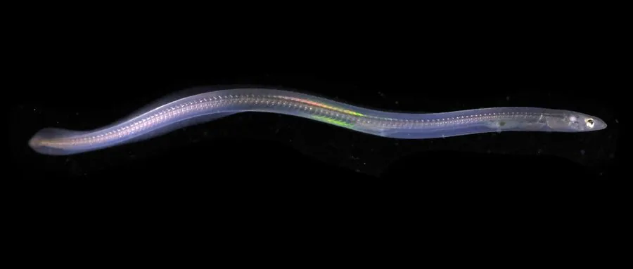

鱼类 · 动物界
欧洲鳗鲡 Anguilla anguilla

在欧洲淡水生长、洄游数千千米到马尾藻海产卵的鳗鲡，因过度捕捞和栖息地破坏被列为极危，是欧洲最受关注的鱼类之一。
- 分类
- 门脊索动物门纲硬骨鱼纲目鳗鲡目科鳗鲡科属鳗鲡属
- 栖息环境
- 欧洲和北非的淡水河流、湖泊与沿海水域，成熟后降河入海到深海产卵
- 地理分布
- 欧洲和北非的河流与沿海，产卵场位于北大西洋马尾藻海，中国无自然分布
- 保护级别
- IUCN 极危（CR）；列入 CITES 附录Ⅱ
物种志
欧洲鳗鲡体细长如蛇，前部呈圆筒形，后部侧扁，鳞片极细小且埋在皮下，体表黏液丰富，摸起来十分滑腻。背鳍、臀鳍与尾鳍相连，没有腹鳍。成鱼体色背部灰绿或暗褐，腹部灰黄。雌鱼体长一般 70–100 cm，雄鱼较小，约 50–70 cm。
欧洲鳗鲡是典型的降海洄游鱼类，分布于欧洲和北非的河流、湖泊和沿海水域。它在淡水中生长 5–20 年，性成熟后于秋季降河入海，洄游约 5000–6000 km 到北大西洋的马尾藻海产卵，孵化出的柳叶鳗随墨西哥湾暖流漂回欧洲沿岸，变态为玻璃鳗后溯河进入淡水。它是肉食性、夜行性鱼类，捕食小鱼、虾蟹、昆虫和螺类，白天藏在洞穴、石缝和泥底中。由于过度捕捞（尤其是鳗苗）、水坝阻断洄游通道、栖息地丧失和寄生虫病，欧洲鳗鲡种群在过去几十年大幅下降，IUCN 将其评为极危，全部鳗鲡属物种都被列入 CITES 附录Ⅱ。中国没有自然分布，市场上也较少见到这种鳗鱼。
形态与习性
- 食性肉食性，捕食小鱼、虾蟹、水生昆虫和螺类
- 体长雌性 70–100 cm，雄性 50–70 cm
- 寿命约 10–20 年
- 洄游秋季降河入海，洄游约 5000–6000 km 到马尾藻海产卵
- 繁殖产卵场位于马尾藻海，幼体经柳叶鳗阶段漂回欧洲
- 习性夜行性，白天藏在洞穴、石缝和泥底中
趣味知识
- 欧洲鳗鲡的产卵场位于大西洋的马尾藻海，距离欧洲海岸约 5000 km。
- 它的幼体叫柳叶鳗，身体透明如柳叶，随洋流漂流近一年才到达欧洲。
- 欧洲鳗鲡被列入 CITES 附录Ⅱ，国际贸易因此受到严格管制。